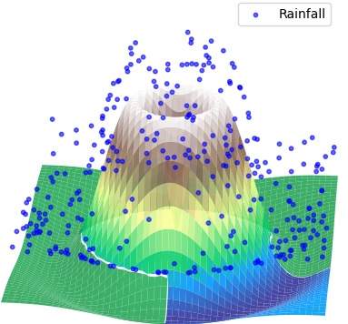

GAMCR in practice: A brief overview#
Typical File Structure for GAMCR#
GAMCR/
├── experiments/
│ ├── check_data.ipynb
│ ├── save_data_batch.py
│ ├── train_models.py
│ ├── compute_statistics.py
│ └── mysite/
│ ├── results/
│ │ ├── detailedresults/
│ │ ├── groups.csv
│ │ ├── NRF_RRD.csv
│ │ └── streamflow.csv
│ ├── data/
│ │ ├── transfer.npy
│ │ ├── lst_transfer.npy
│ │ ├── y_0.npy
│ │ └── ...
│ ├── data_mysite.txt
│ └── mysite_best_model.pkl
Folder Structure for Using the GAMCR Package#
To properly use the GAMCR package, you should have a folder for each site with the following structure:
The folder should be named
mysite.Inside this folder, you should have a file named
data_{mysite}.txt. This file can be created by running the notebookcheck_data.ipynb.Two subfolders will be created and used by GAMCR:
``data/``: This subfolder will store the preprocessed data, created when running the script
save_data_batch.py.For simulated data:
If the true transfer functions have been computed, they are saved in a matrix in the file
transfer.npy.The indices corresponding to each precipitation event used to compute the true transfer functions are saved in the file
lst_transfer.npy.
``results/``: This subfolder will store various statistics on the results of a trained model, created when running the script
compute_statistics.py. Specifically, the following files will be generated:groups.csv: Describes the precipitation and/or antecedent wetness ranges for each group of data points used to compute averages.NRF_RRD.csv: Contains NRF, RRD, and weighted average RRD computed for the different groups of data points.streamflow.csv: Includes observed and predicted streamflow time series.
GAMCR will also save the models you train for that site in this folder. By running the script
train_models.py, a file named{mysite}_best_model.pklwill be generated.
